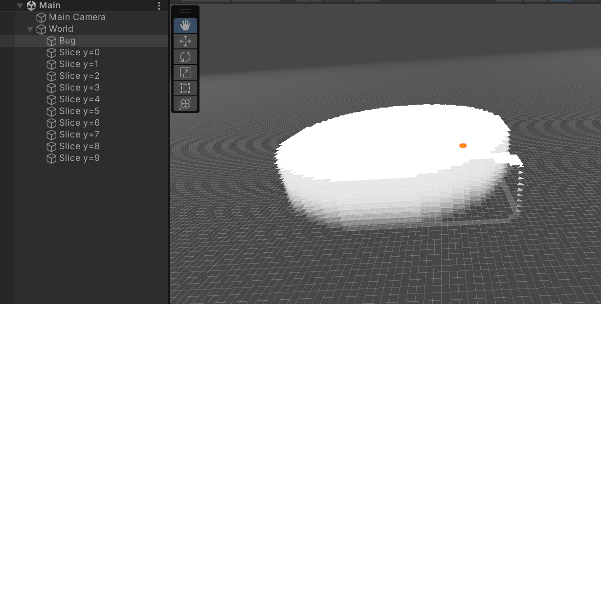
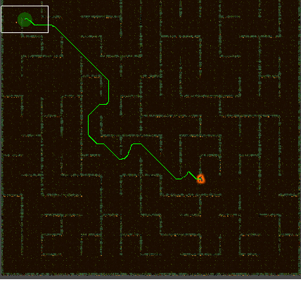

For the Fall 2023 UCI Video Game Development Club season, I was able to be a part of an amazing (the best?) team and worked on Haunted Hangover, a Vampire Survivors style game set around a hungover wizard trapped in a forest. I specialized in developing the enemy pathfinding system for the game. Originally, I implemented RoyT's A* algorithm, but due to the requirements of Haunted Hangover's forest maze, RoyT had a significant performance problem. I ended up making my own custom implementation of the A* algorithm, one that also supported 3D grids, but more importantly allowed me to control and optimize it to best balance path-quality and performance for the game at hand.
Haunted Hangover / A* Pathfinding
Video Game Development Club Project
Visit The Itch.io Page To Download
Visit The A* Github Page

